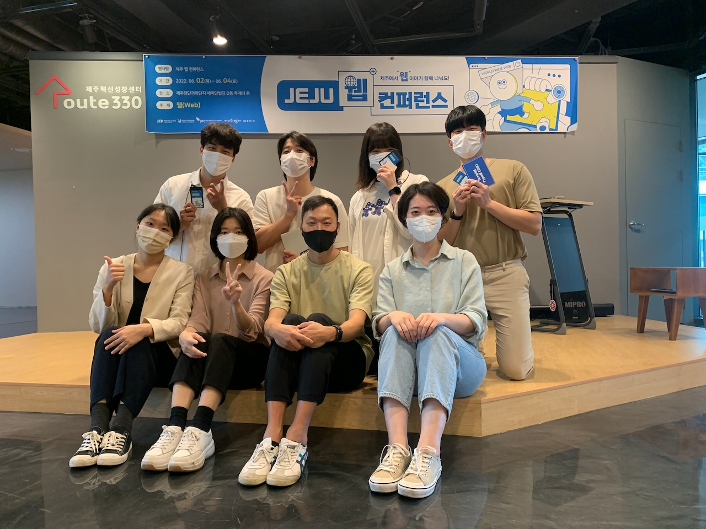

2022년 7월 27일
한 7년차 쯤 되었을 때, 처음 시니어 개발자라고 불린 것 같습니다. 그때는 “시니어 개발자”라는 호칭 자체가 생소했고, 심지어 조금 불쾌하기까지 했어요. 나이도 들고 경력도 좀 되었는데, 마땅히 공식적인 직함 같은 게 없는 상황에, 애써 우대해 불러주고 싶을 때 쓰는 호칭 정도로 느껴졌습니다.
게다가 제가 평소 생각하는 시니어 개발자는 백발머리 성성한 그런 이미지를 떠올렸는데, 아직 30대 초반 청년(?)이었던 저한테 시니어라니?! 당시 제 주변 동료들은 팀장이 된다거나 승진을 한다거나 하는데, 저만 아직 말단 개발자니까, 뭔가 문제시되는 게 아닌가 하는 자격지심 같은 삐딱한 마음이 발동했나 봅니다.
그런데 요새는 왠지 시니어 개발자의 대우가 꽤 좋은 느낌입니다. 채용 시장에서는 물론이고, 개발자 커뮤니티 내에서도 “시니어 개발자”라는 부류의 사람들을 인정해주는 분위기랄까요? 이미지 자체가 좋아지니, 그렇게 불리는 것에 대해서 느꼈던 거부감이 호감으로 바뀔 지경입니다.
어쨌건, 이제 누가 저보고 “시니어 개발자”라고 말해도, 저 스스로도 어색하지 않은 경력이 갖춰진 것 같습니다. 백발성성까지는 아니더라도, 흰머리도 많아진 건 확실하고요. 췟!
주변에 “그렇다면 시니어 개발자를 판단하는 기준이 무어냐?”라고 물어보면, 대략 주관적으로는 판단이 가능한 것 같습니다만, 경계를 확실히 가르는 객관적 기준이 있는 것 같지는 않습니다. 각자 생각하는 기준이 다를 수 있기에, 회색 영역이 꽤 넓게 자리잡는 것 같습니다.
한편, 회사들마다 개발자 공개/비공개 레벨 제도가 있다거나, 아예 직급이나 직함이 그 역할을 대신하는 경우도 있는 것 같습니다. 예를 들어, L1부터 L7까지 있는데, 대략 L4부터 시니어라고 부른다거나 하는 식인 거죠.
아니면, 아예 더 주관적으로, 주변 개발자들을 이끌 수 있는 영향력이 있으면 시니어라고 한다거나, 아니면 본인 밥값을 충분히 하고 주변 개발자도 도와주면 시니어라고 한다거나 하는 의견도 들었습니다.
오래전 처음 다녔던 회사에서는 전통적인 직급 제도가 있었습니다. 사원은 그냥 누구누구’씨’라는 호칭으로 불렀고, 대리부터 직급과 ’님’자를 붙여서 불렀습니다. 그러니까 저보고는 “김대현씨”라고 불렀는데, 이게 뭐, 한국어 문법적으로 따지자면 존댓말이자만, 사실상 하대죠. 그러다 대리가 되면, 윗사람은 ’김대현 대리’라고 부르고, 사원들은 ’김대현 대리님’이라고 부릅니다.
동일 직급 내에서는 연봉 차이가 거의 없고, 다음 직급으로 승진을 하면 연봉 인상 폭이 좀 티가 나는 점이 인상적입니다. 사실 이런 회사에서는 주니어/시니어의 구분이 의미가 없고, 그냥 직급 자체가 위계를 드러냅니다.
Daum은 당시에는 젊은 인터넷 기업으로, 서로 호칭을 누구누구’님’이라고 직급없이 불렀습니다. 그러니까 당시 이재웅 대표이사님 시절인데, 막 입사한 신입사원도, 대표이사를 부를 때, “재웅님”이라고 부르는 거지요. (뭐, 다행인 점은, 대부분 부를 일이 없습니다). 지금이야 IT 업계에서 님문화나 영어 호칭 문화가 꽤 일반적인 것 같습니다만, 당시에는 나름 파격이었죠.
호칭 자체는 ’님’으로 통일되긴 했는데, 대신 직함이 붙습니다. TFT장이나, 팀장이라거나, 본부장이라거나 유닛장이라거나 하는 식으로요. 그래도 사내에서 서로 부를 때는 ’님’자로 끝입니다. 제가 팀장이라고 하더라도, 저희 팀원들은 저를 ’대현님’이라고 부릅니다. 타이틀 중에 뭐 ’개발리더’라는 이상한 것도 해보았는데, 뭐 별 차이점은 모르겠었습니다.
암튼, 다음에서 오래근무를 하다보니, 명함에는 회사에 있는 흔한 직급이 없어서, 어색한 점도 없지는 않았습니다. 예를들면, 주위 어르신들은, “아니 왜 10년이나 다녔는데 아직도 사원이냐? 우리 대현이 승진을 못해서 어떻게 하냐?” 이런 걱정을 해주시는 거죠. “저희 회사는 직급 제도가 없이 다 님으로 부릅니다”라고 말씀드리면, “회사가 무슨 동호회냐? 님으로 부르게?”라고 생각하시는 경우도 없지는 많았을 겁니다.
